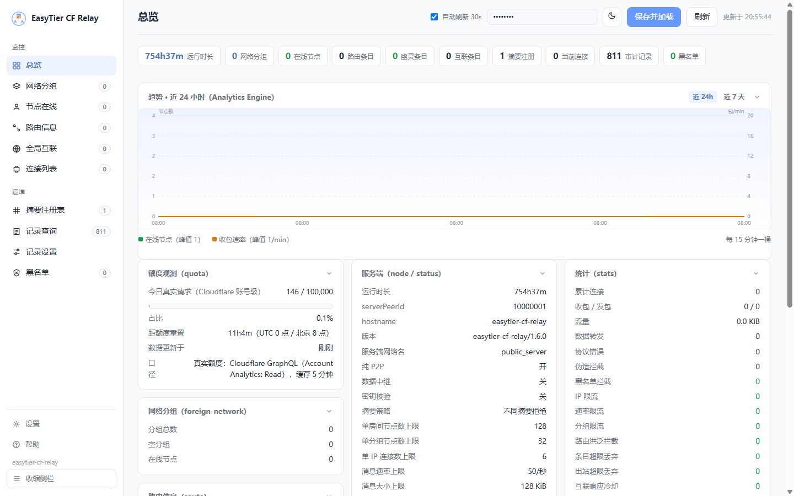

easytier-cf-relay
在 Cloudflare Workers 免费额度内运行 EasyTier 自建 WebSocket 节点——无需 VPS，
客户端 -p wss://<你的域名>/ 即可组网。纯 P2P 优先（中继仅兜底），
全 Hibernation API 空闲成本趋零。
功能特性
协议字节级对齐官方实现，在免费额度内把「幽灵节点」等第三方实现的痛点逐一解决。

五分钟部署
免费 Cloudflare 账号 + Node ≥ 18 + Wrangler v4，5 分钟完成部署。
1. 部署节点
npm install
npx wrangler login # 浏览器授权
npx wrangler deploy # 部署
# 验证（把 <name> 替换为 wrangler 输出的 Worker 名）
curl https://easytier-cf-relay.<你的子域>.workers.dev/health
# 期望: {"ok":true}
配置项可先用 wrangler.toml 生成器 生成；不绑定自定义域名时使用默认
*.workers.dev 域名即可。
2. 客户端接入
easytier-core --network-name myteam --network-secret s3cret! \
--hostname node-a -p wss://<你的域名>/
任意平台（Windows / macOS / Linux / 手机端）填相同的网络名与密钥即可互见；
节点地址填 wss://<你的域名>/（路径任意）。
easytier-core \
--network-name myteam \
--network-secret s3cret! \
--hostname node-a \
-p wss://et.example.com/- 网络名称：
myteam - 网络密钥：
s3cret! - 节点 / Peer：
wss://et.example.com/（新建一个节点条目填入即可）
docker run --name easytier -d --network host --cap-add NET_ADMIN \
easytier/easytier:latest \
--network-name myteam --network-secret 's3cret!' \
-p wss://et.example.com/
本地开发：npm run dev（wrangler dev，端口 8787），用官方客户端连接 ws://127.0.0.1:8787/ 验证。
完整步骤、域名绑定与 FAQ 见 部署手册。
架构
Worker 入口负责路由与边缘防护，Durable Object 负责协议会话与转发；纯 P2P 优先，中继仅兜底。
RELAY_DATA=0 完全关闭）致谢
本项目站在前人肩膀上。
- EasyTier — 官方去中心化 mesh VPN。本实现的协议行为全部以官方源码（tag v2.6.4）为基准逐项对齐，并以官方客户端实测验证兼容性。
- IceSoulHanxi/easytier-ws-relay — 最早的 Cloudflare Workers 版 EasyTier WS 中继之一。其「幽灵节点」痛点直接催生了本项目的六重防线设计。
- Teleseon/cf-workers-et-ws — 其 DO 计费与 protobuf 兼容性经验直接影响了本项目「全 Hibernation + pbjs 静态代码生成」的技术路线。
- 21paradox/easytier-wsrelay 与 PIKACHUIM/easytier-worker — 踩过的协议细节坑为本项目「逐字段对照官方源码修正」提供了前车之鉴。
另一种选择：【教程】Cloudflare Tunnel 自建 EasyTier 共享节点（无 Docker，自定义域名 wss:// 接入）。